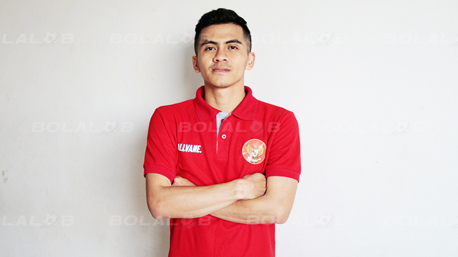

Muhammad Albagir
Posisi: Kiper
TL: 13 Desember 1997
Asal Klub: BJL 2000 Shiba Semarang U-20
Muhammad Yusuf Kurniawan
Posisi: Kiper
TL: 7 September 1995
Asal Klub: Antam FC Jakarta
Tricahyo Ramadhan
Posisi: Anchor
TL: 5 Maret 1993
Asal Klub: Mataram FC NTB/Vamos Mataram
Andriansyah Agustin
Posisi: Anchor
TL: 19 November 1988
Asal Klub: Bintang Timur Surabaya
Rio Pangestu Putra
Posisi: Anchor
TL: 30 Agustus 1997
Asal Klub: APK Samarinda
Ardiansyah Runtuboy
Posisi: Flank
TL: 15 Juli 1998
Asal Klub: Blacksteel Manokwari
Sauqy Saud Lubis
Posisi: Flank
TL: 29 Januari 1997
Asal Klub: Mataram FC NTB/Vamos Mataram
Anton Cahyo Nugroho
Posisi: Flank
TL: 22 Juli 1997
Asal Klub: BJL 2000 Shiba Semarang

Andi Fardiansyah
Posisi: Flank
TL: 23 Juni 1995
Asal Klub: Kamiada FC
Eko Sutrisno
Posisi: Flank
TL: 8 Maret 1992
Asal Klub: Permata Indah Manokwari
Mochammad Iqbal Iskandar Rahmattulah
Posisi: Flank
TL: 23 Agustus 1995
Asal Klub: Vamos Mataram
Muhammad Subhan Faidasa
Posisi: Pivot
TL: 4 Juli 1994
Asal Klub: Biangbola
Johanis Mustamu
Posisi: Pivot
TL: 19 Januari 1994
Asal Klub: IPC Pelindo II Jakarta
Alexander Benhard Larawo
Posisi: Pivot
TL: 25 April 1993
Asal Klub: Blacksteel Manokwari